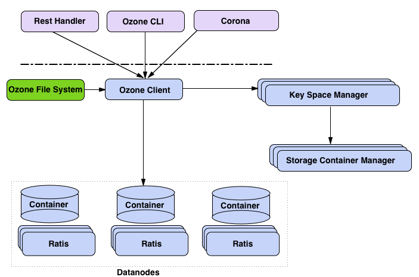

Ozone is an Object store for Apache Hadoop. It aims to scale to billions of keys. The following is a high-level overview of the core components of Ozone.

The main elements of Ozone are :
Clients
Ozone ships with a set of ready-made clients. They are Ozone CLI and Freon.
Ozone CLI is the command line interface like ‘hdfs’ command.
Freon is a load generation tool for Ozone.
REST Handler
Ozone provides both an RPC (Remote Procedure Call) as well as a REST (Representational State Transfer) style interface. This allows clients to be written in many languages quickly. Ozone strives to maintain a similar interface between REST and RPC. The Rest handler offers the REST protocol services of Ozone.
For most purposes, a client can make one line change to switch from REST to RPC or vice versa.
Ozone File System
Ozone file system (TODO: Add documentation) is a Hadoop compatible file system. This is the important user-visible component of ozone. This allows Hadoop services and applications like Hive/Spark to run against Ozone without any change.
Ozone Client
This is like DFSClient in HDFS. This acts as the standard client to talk to Ozone. All other components that we have discussed so far rely on Ozone client (TODO: Add Ozone client documentation).
Key Space Manager
Key Space Manager(KSM) takes care of the Ozone’s namespace. All ozone entities like volumes, buckets and keys are managed by KSM (TODO: Add KSM documentation). In Short, KSM is the metadata manager for Ozone. KSM talks to blockManager(SCM) to get blocks and passes it on to the Ozone client. Ozone client writes data to these blocks. KSM will eventually be replicated via Apache Ratis for High Availability.
Storage Container Manager
Storage Container Manager (SCM) is the block and cluster manager for Ozone. SCM along with data nodes offer a service called ‘containers’. A container is a group unrelated of blocks that are managed together as a single entity.
SCM offers the following abstractions.

Blocks
Blocks are like blocks in HDFS. They are replicated store of data.
Containers
A collection of blocks replicated and managed together.
Pipelines
SCM allows each container to choose its method of replication. For example, a container might decide that it needs only one copy of a block and might choose a stand-alone pipeline. Another container might want to have a very high level of reliability and pick a RATIS based pipeline. In other words, SCM allows different kinds of replication strategies to co-exist.
Pools
A group of data nodes is called a pool. For scaling purposes, we define a pool as a set of machines. This makes management of datanodes easier.
Nodes
The data node where data is stored.